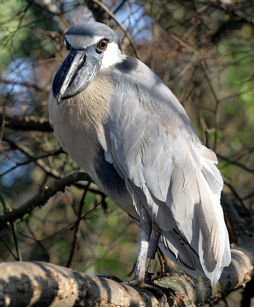

Herons Not Found in Maryland

There are many species of heron that are not found in Maryland. For example, the heron in the picture (Atribution: Patrick Coin from WikiMedia Commons) is found in Central and South America. It is a boat-billed heron (The Scientific name is Cochlearius cochlearius ). It is the only heron in the genus cochlearius. The only way to see one without travelling outside the country is to go to the zoo. The smithsonian zoo has one in the bird house section!
Here are some other Herons not found in Maryland
- Trigrisomatinae
- Fasciated tiger Heron - Trigrisoma fasciatum
- Botaurinae
- ZigZag heron - Zebrilis iandulatus
- Pinnated Bittern- Botaurus pinnatus
- Ardeinae
- Purple heron - Ardea purpiarea
- Western Reef heron - Egretta gularis